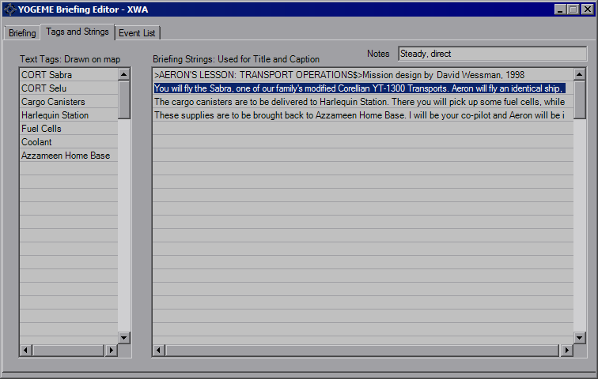

Briefing Dialog
Opening the Briefing Dialog will bring you to the main Briefing Animation tab.

This is the pre-mission briefing animation that plays before you fly. It animates at 25 fps, allows you to write on it, highlight FlightGroups, as well as moving and zooming the map. XWA adds the capability of moving craft icons, as the briefing is isolated from the FlightGroup data. You also have the ability to display craft data and change regions (which really throws up the region name while you wipe the slate).
The XWA Briefing dialog behaves the same as TIE and XvT, although there is the cosmetic difference on the main display and a few extra events. All of the previous events behave exactly the same, although due to the isolation of data, only the strings and text tags can be converted back and forth to TIE/XvT. XWA also gives a *lot* more room for briefing information in the mission file, so the number of possible events is much, much higher. XWA also allows craft icons to move and rotate about the map, hence the increased event capacity.

In addition to the new events, XWA also allows you to edit the notes assigned to the Briefing Strings. These were typically used as instructions for the voice actors.

Same as XvT, since v1.3 there's the "Visible to Teams" tab, which is primarily for multiplayer purposes and allows for the editing of both briefings.
Remaining information can be viewed on the TIE Briefing Dialog page.